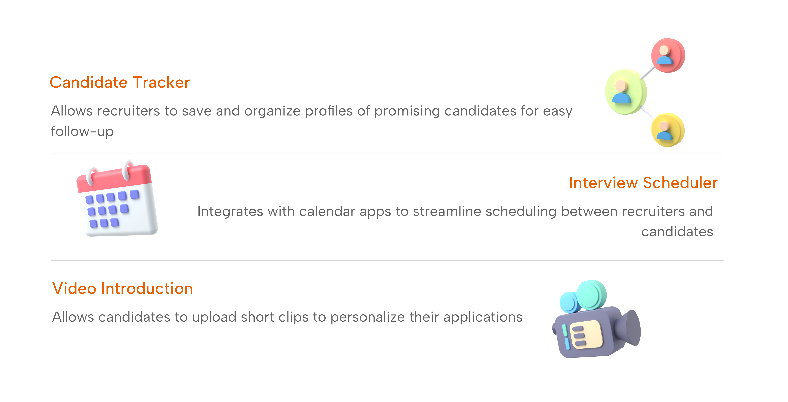

First Round
Matching Perfect Candidates to Perfect Roles
Overview
First Round is a recruitment app designed to streamline and personalize the process of matching candidates to their ideal roles by focusing on compatibility and ease. It offers an innovative, all-in-one platform where recruiters and candidates can connect with a matchmaking approach similar to a dating app, making it simple to find perfect professional fits based on skills, culture, and career aspirations.
Problem Statement
Finding the right job or the right candidate can be stressful and time-consuming. Job seekers often have trouble finding opportunities that match their skills and goals, while employers struggle to sort through applications to find the best fit. This can lead to delays, missed opportunities, and frustration for both sides.
How did First Round begin?
The Origin Story
One thing I've learned as a college student searching for an internship is that the process can definitely take a toll on you. While sitting in my dorm room applying for my dream roles, I started thinking of ideas for a less time-consuming and stress-free way to apply for open positions.
Project Timeline
October 2024 - Present
Project Details
Divergent to Convergent Thinking
Logo Design: Brainstorming and Refining Design Choices
Rapid Iteration
During one-minute brainstorming sprints, I sketched ideas that aligned closely with the mission of the 'First Round' app. After creating 12 different mock designs, I used convergent thinking to narrow down my options and move forward with a logo design that helps me to further develop my mission statement.
Pros - Minimalistic, two-toned color scheme
Cons - Does not clearly define the app's purpose
Pros - Clear and defined logo
Cons - Complex, not versatile, bland color
Pros - Detailed and descriptive
Cons - The text isn't the focus of the logo
Digital Wire Frame & Prototype
Landing Page: Candidate Overview
Purpose
The landing page is the first page users will see upon entering the app. This prototype shows the look of the app from the recruiters standpoint. Here they can see a candidate that is populated based on preset filters such as; degree type, years of work experience, and their match score to the position that the recruiter is searching for.
Design Methodology
- Affordance/Signifier - Clear buttons and relevant icon choices
- Fitt's Law - Large, easy to click buttons. Closely distanced icon suite
Digital Wire Frame & Prototype
Landing Page: Resume
Purpose
The resume page is a second-level page that users can access by tapping on the right-hand side of the screen. This page provides recruiters with more detailed insights when they want to learn more about a candidate.
Design Methodology
- Feedback - Progress bar lets users know what page they are on.
- Gulf of Execution - Scroll bar helps users understand how they can interact with the document. Clear signifiers to afford scrolling.
Digital Wire Frame & Prototype
Landing Page: Get To Know Me
Purpose
The 'Get to Know Me' page includes two customizable options that allow candidates to express themselves both within and beyond a work environment. Recruiters can conveniently interact with the page without needing to navigate away.
Design Methodology
- Kerning/Leading - Adjustments made to each body of text to enhance readability.
- UX Writing - Friendly and inviting tone to encourage users to interact with the 'conversation starter' feature.
Goals for the Future
New Features to Come
Final Prototype
4 Interactive Pages
Solution Overview
‘First Round’ makes hiring easier by using a swipe-based system to connect job seekers with employers. Candidates can highlight their skills and personality through personalized profiles, while employers can set filters to find the right match.
Skills Used
Reflection
For this project, I wanted to focus on applying design principles like aesthetics and color theory to enhance the user experience. I experimented with color schemes to understand how they affect mobile screen resolution and reflect branding. I settled on a minimalistic color scheme, using one bright color supported by monochromatic tones. This approach ensures the design is not overwhelming for users while increasing recognition of the application through the standout color.
More Projects
Check out my other work